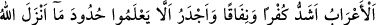
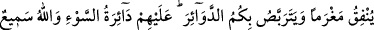
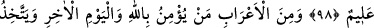
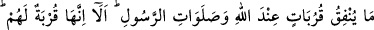
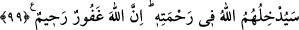
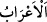
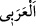

BEDEVÎLER
97. Bedevîler, kâfirlik ve münafıklık bakımından hem daha beter, hem de Allah’ın
Rasûlü’ne indirdiği kanunları tanımamaya daha yatkındır. Allah çok iyi bilendir,
hikmet sahibidir.
98. Bedevîlerden öylesi vardır ki Allah yolunda harcadığını angarya sayar ve sizin
başınıza belâlar gelmesini bekler. (Bekledikleri) o kötü belâ kendi başlarına
gelmiştir. Allah pek iyi işiten, çok iyi bilendir.
99. Bedevîlerden kimi de var ki Allah’a ve âhiret gününe inanır, verdiğini Allah
katında yakın dereceler kazanmaya ve Rasûl’ün duâlarını almaya vesile sayar. İyi
bilin ki o, (verdikleri) kendileri için yakın dereceler(e vesile)dir. Allah onları
rahmetinin içine koyacaktır. Muhakkak ki Allah bağışlayandır, esirgeyendir.
“
(bedevîler)” kelimesi, “
” kelimesinin çoğuludur. Tıpkı “el-Arab”ın
“arabî” kelimesinin, “el-mecûs”un “mecûsî” kelimesinin ve “el-yehûd”un da “yehûdî”
kelimesinin çoğulu olması gibi.
“el-Arab” ile “el-A‘râb” arasındaki fark şudur: “el-Arab”, özel bir ırkın (Arapların)
adı olup şehirde ve çölde yaşayanlarına şâmildir. “el-A’râb (bedevî)” kelimesi ise bu
ırkın, çölde yaşayanlarına verilen addır. Dolayısıyla “el-Arab” kelimesi “el-A‘râbî”
kelimesinden daha geneldir. Ayrıca “el-Arab” kelimesinin şehir ve köylerde yerleşik
olarak yaşayan Araplar için, “el-A‘râb” kelimesinin ise çöl halkı (bedevîler) için
kullanıldığı da söylenmiştir. Demek ki bu iki kelime farklı mânâlara gelmektedir.
“Bedevîler” çölde yaşayan Araplar, şehirlerde yaşayanlardan “kâfirlik ve münafıklık
bakımından hem daha beter”dirler. Çünkü çöl halkı, itaate yanaşmama, emre boyun
eğmeme karakterinde olmaları bakımından vahşi hayvanlara benzerler. Sıcak ve kuru
havada yaşamaları kalplerinin katılığını artırmıştır. Kalplerindeki katılık da onlarda
kibir, övünme ve haktan sapma gibi kötü hasletleri doğurmuştur.
Ayrıca hiç eğitim görmemiş, ilim ve marifet ehli insanlar arasına girmemiş, Allah’ın
kitabını ve Rasûlü’nün nasihatlarını dinlememiş olan kimse, gecesini ve gündüzünü ilim